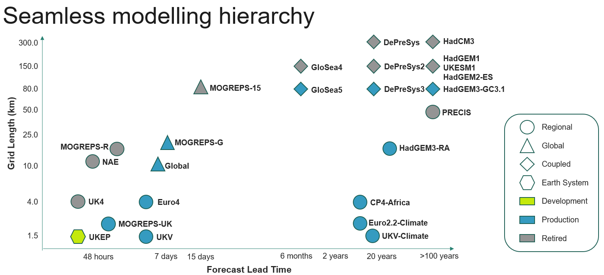
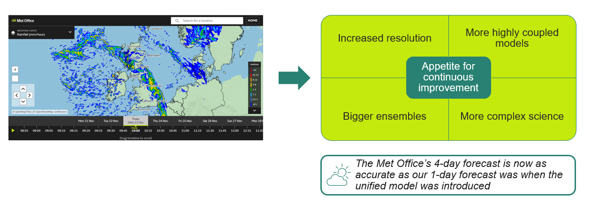
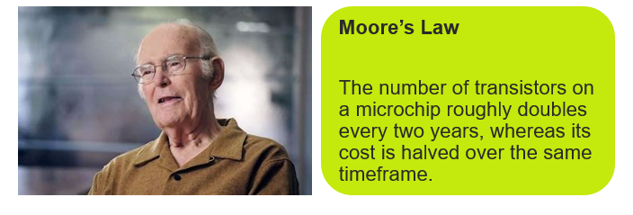
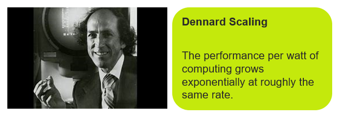
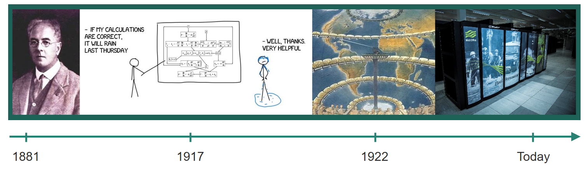
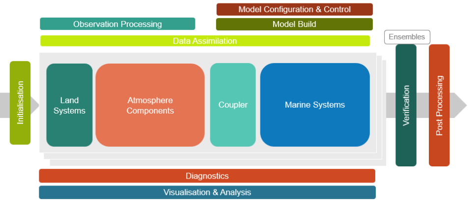

1. Introduction to Momentum® and LFRic
The Momentum Frameworks seamless modelling hierarchy
Since the 1990’s the Met Office strategy has been to develop a single model family used for prediction across a range of timescales. This means the same dynamical core and, where possible, the same parameterization schemes are used across a broad range of spatial and temporal scales on a traceable framework.
We therefore have a single tracable science configuration suitable for numerical weather prediction (NWP), seasonal forecasting and climate modelling with forecast times ranging from a few days to hundreds of years which can be used for regional and global forecasting.
{kind=link}

The need for next generation modelling systems
The Met Office, as well all Momentum® Parnters have run the Unified Model since 1990’s. We’re continually improving our weather and climate models to meet the societal demands for increased accuracy. This has been achieved through a combination of approaches:
Increasing the resolution of our models to capture finer scale features and hence improve accuracy. Currently we run our global model at 10 kilometres but we would like to run it at higher resolutions.
Including additional components in weather and climate models and perhaps coupling them to other existing forecast models, for example pulling in an iceberg model or a lake model.
Increasing the size of ensembles to improve predictability.
Introducing more complicated science
{kind=link}

This has made our models much more accurate but also more complex and computationally expensive and the systems we use need upgrading for the super computers of the future.
We’ve been able to deliver these improvements largely due to the ongoing miniaturization of technology, increasing the computational power of the supercomputers our models run on by utilising more powerful chips and processors.
This has been due to 2 well known phenomena:
Moore’s law: The number of transistors on a microchip roughly doubles every two years, whereas it’s cost is halved over the same timeframe.
{kind=link}

Dennard scaling: The performance per watt of computing grows exponentially at roughly the same rate.
{kind=link}

Together, these have resulted in increasingly powerful supercomputers, which in turn has allowed us to create increasingly accurate models, truly probabilistic forecasts and better coupling of models.
{kind=link}

Benefits
{kind=link}
